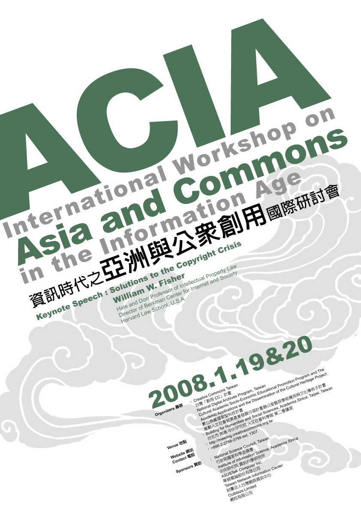

ACIA Workshop：資訊時代之亞洲與公眾創用國際研討會

臺灣創用 CC 計畫將於 2008/01/19-01/20 舉辦「資訊時代之亞洲與公眾創用國際研討會」，英文簡稱為「ACIA」。這是一個邀集亞洲區各國的公眾授權相關學者專家齊聚一堂的會議，內容涵蓋科技、法律及文化面。會議中將會有以下幾項目標：
1. 藉由產生更多的成員和增進聯繫亞洲太平洋地區相關組織，來強化亞洲地區公眾授權的使用。
2. 提昇此區域公眾授權概念，並為之提供一個發展實用策略的社群。
3. 建立一個企業參與的空間， 用以證明和呈現開放內容授權成功的商業模式。
4. 建立一個亞洲重要公眾創用議題的討論場合（如：在我們這個年代,“開放”這個詞彙意義，以及亞洲公眾議題的歷史和扮演的角色）
期待台北會議將能夠呈現公眾議題在亞太地區的觀點，並且讓我們先行預備 2008/07/30-08/01 在日本札幌舉辦之創用 CC 世界年會的報告。研討會免費參加，如欲用餐、住宿或參加 19 日晚間在河岸留言舉辦的 CC 音樂會則酌收費用。詳細內容請參考 ACIA 網站。